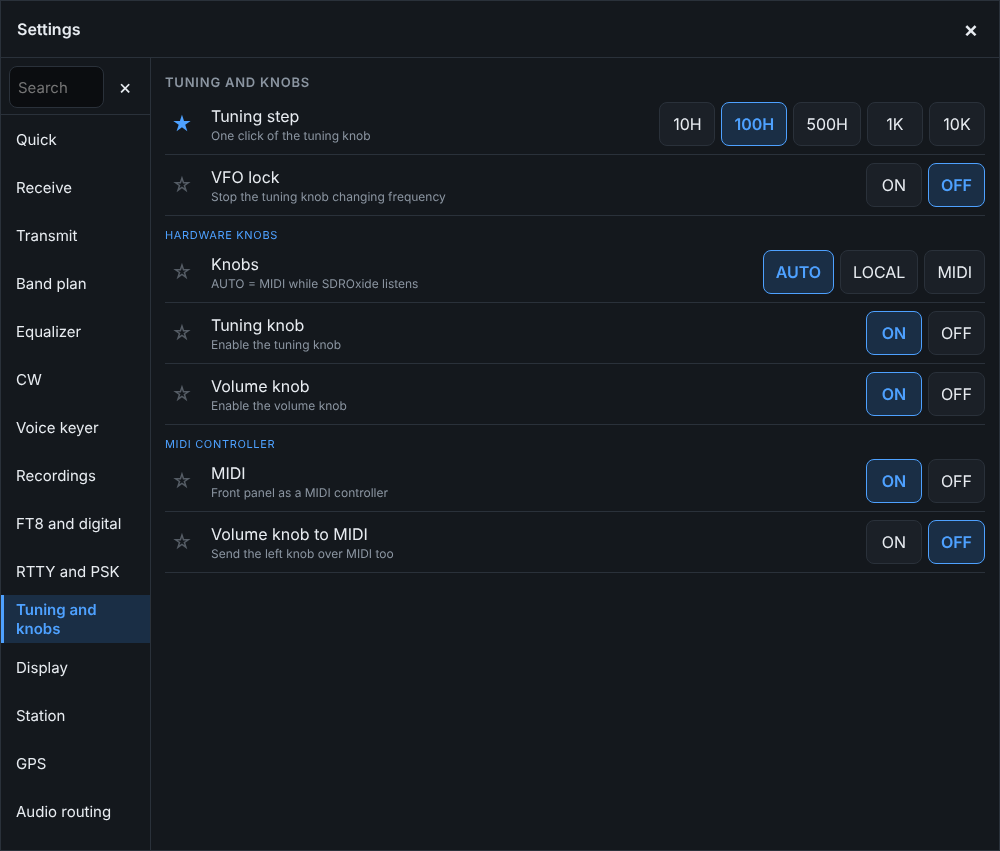

Tuning, knobs and MIDI#

Tuning#
- Tuning step (10 Hz, 100 Hz, 500 Hz, 1 kHz, 10 kHz) is used by the knob, the scroll wheel, the arrow keys and Hamlib's UP/DOWN.
- VFO lock stops the dial moving from the knob, the scope and the keyboard. Typed frequencies and CAT still tune.
- On a keyboard, the arrow keys tune by the step.
The radio's knobs#
- Left knob: the speaker volume; push mutes.
- Right knob: tunes in steps; push cycles the step; hold 1 s toggles the VFO lock. Tap a control-strip tile and the right knob adjusts that tile instead, until you push it or 10 s pass.
With a TCI client connected the right knob moves the client's VFO; with an HPSDR client it is ignored (HPSDR cannot report a retune to the client).
Tuning knob and Volume knob turn each knob off. Knobs AUTO sends the tuning knob to MIDI while a program is connected to the radio's MIDI port, and tunes locally otherwise.
MIDI#
The radio publishes the ALSA MIDI port jeSDR:Controls, so SDROxide and
other MIDI-aware programs can use the knobs, key and PTT:
| Control | MIDI (channel 1) | Suggested use |
|---|---|---|
| Left knob (only with Volume knob to MIDI ON) | CC 16, relative 64-centered | Volume |
| Right knob | CC 17, relative 64-centered | Tune |
| Left knob push (with Volume knob to MIDI) | Note 60 | Mute |
| Right knob push | Note 61 | anything, e.g. RIT |
| Radio transmitting (key or mic) | Note 62 | PTT, button mode hold |
| Key dash / straight line | Note 64 | CW straight key, with Keyer OFF |
| Key dot line | Note 65 | — |
| Mic PTT line | Note 66 | — |
In SDROxide: Settings → MIDI, choose the port, then MIDI LEARN each
row. For SDROxide on another computer, install
rtpmidid on the Pi and connect the
port with aconnect 'jeSDR:Controls' 'rtpmidid:Network'.
| Setting | Console name | Default | Values | What it does |
|---|---|---|---|---|
| Tuning step | STEP | 100H | 10H, 100H, 500H, 1K, 10K | One click of the tuning knob |
| VFO lock | VFOLK | OFF | ON, OFF | Stop the tuning knob changing frequency |
Hardware knobs
| Setting | Console name | Default | Values | What it does |
|---|---|---|---|---|
| Knobs | KNOBS | AUTO | AUTO, LOCAL, MIDI | AUTO = MIDI while SDROxide listens |
| Tuning knob | TUNEKNOB | ON | ON, OFF | Enable the tuning knob |
| Volume knob | VOLKNOB | ON | ON, OFF | Enable the volume knob |
MIDI controller
| Setting | Console name | Default | Values | What it does |
|---|---|---|---|---|
| MIDI | MIDI | ON | ON, OFF | Front panel as a MIDI controller |
| Volume knob to MIDI | VOLMIDI | OFF | ON, OFF | Send the left knob over MIDI too |